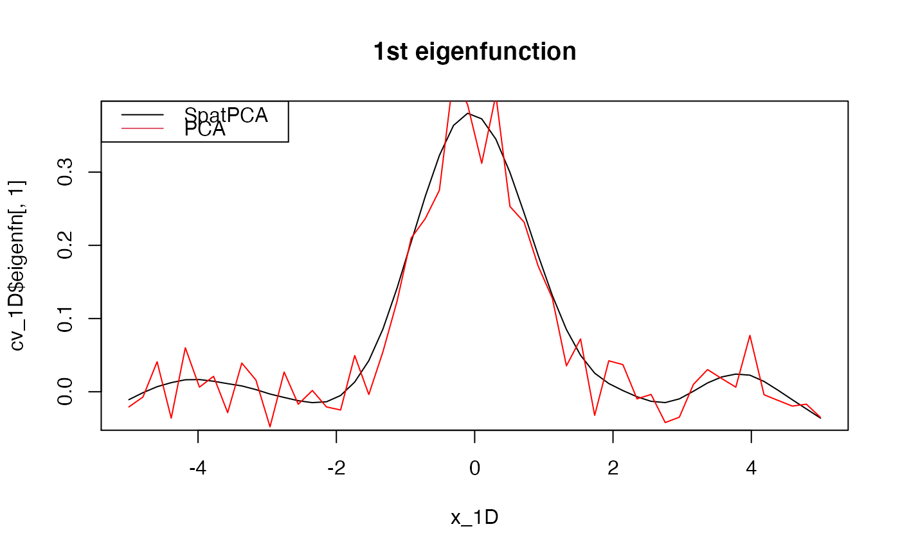
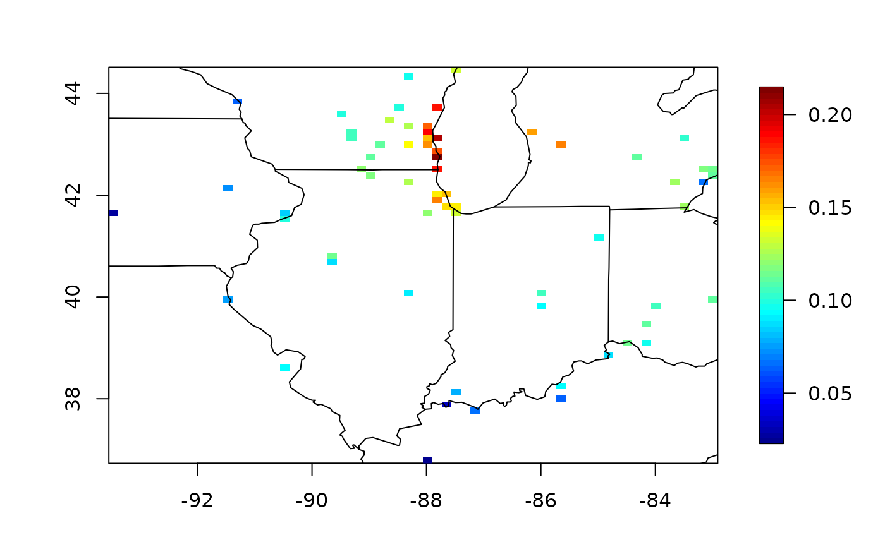
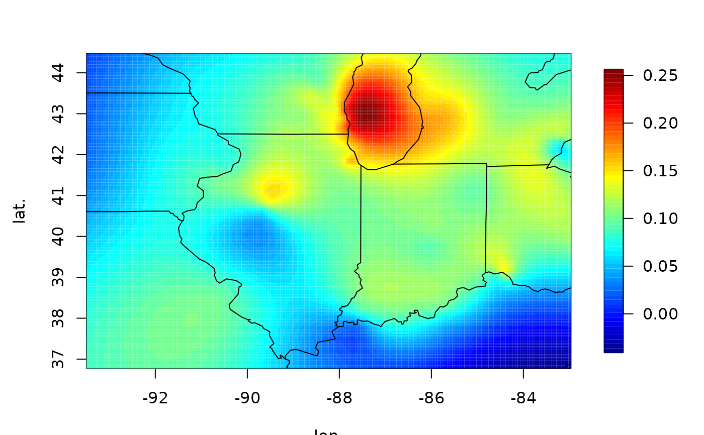
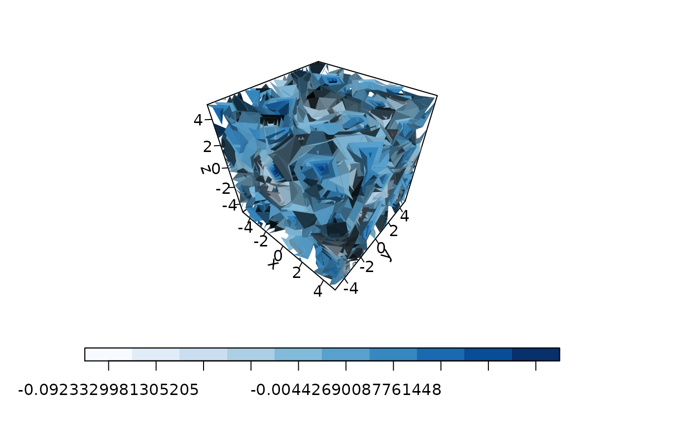

Produce spatial dominant patterns and spatial predictions at the designated locations according to the specified tuning parameters or the selected tuning parameters by the M-fold cross-validation.
spatpca( x, Y, M = 5, K = NULL, is_K_selected = ifelse(is.null(K), TRUE, FALSE), tau1 = NULL, tau2 = NULL, gamma = NULL, is_Y_centered = FALSE, maxit = 100, thr = 1e-04, num_cores = NULL )
| x | Location matrix (\(p \times d\)). Each row is a location. \(d\) is the dimension of locations |
|---|---|
| Y | Data matrix (\(n \times p\)) stores the values at \(p\) locations with sample size \(n\). |
| M | Optional number of folds; default is 5. |
| K | Optional user-supplied number of eigenfunctions; default is NULL. If K is NULL or is_K_selected is TRUE, K is selected automatically. |
| is_K_selected | If TRUE, K is selected automatically; otherwise, is_K_selected is set to be user-supplied K. Default depends on user-supplied K. |
| tau1 | Optional user-supplied numeric vector of a nonnegative smoothness parameter sequence. If NULL, 10 tau1 values in a range are used. |
| tau2 | Optional user-supplied numeric vector of a nonnegative sparseness parameter sequence. If NULL, none of tau2 is used. |
| gamma | Optional user-supplied numeric vector of a nonnegative tuning parameter sequence. If NULL, 10 values in a range are used. |
| is_Y_centered | If TRUE, center the columns of Y. Default is FALSE. |
| maxit | Maximum number of iterations. Default value is 100. |
| thr | Threshold for convergence. Default value is \(10^{-4}\). |
| num_cores | Number of cores used to parallel computing. Default value is NULL (See |
A list of objects including
Estimated eigenfunctions at the new locations, x_new.
Selected K based on CV. Execute the algorithm when is_K_selected is TRUE.
Selected tau1.
Selected tau2.
Selected gamma.
cv scores for tau1.
cv scores for tau2.
cv scores for gamma.
Sequence of tau1-values used in the process.
Sequence of tau2-values used in the process.
Sequence of gamma-values used in the process.
If is_Y_centered is TRUE, centered_Y is the centered Y; else, centered_Y is equal to Y.
Input location matrix. Only scale when it is one-dimensional
An ADMM form of the proposed objective function is written as $$\min_{\mathbf{\Phi}} \|\mathbf{Y}-\mathbf{Y}\mathbf{\Phi}\mathbf{\Phi}'\|^2_F +\tau_1\mbox{tr}(\mathbf{\Phi}^T\mathbf{\Omega}\mathbf{\Phi})+\tau_2\sum_{k=1}^K\sum_{j=1}^p |\phi_{jk}|,$$ \(\mbox{subject to $ \mathbf{\Phi}^T\mathbf{\Phi}=\mathbf{I}_K$,}\) where \(\mathbf{Y}\) is a data matrix, \({\mathbf{\Omega}}\) is a smoothness matrix, and \(\mathbf{\Phi}=\{\phi_{jk}\}\).
Wang, W.-T. and Huang, H.-C. (2017). Regularized principal component analysis for spatial data. Journal of Computational and Graphical Statistics 26 14-25.
Wen-Ting Wang and Hsin-Cheng Huang
# The following examples only use two threads for parallel computing. ## 1D: regular locations x_1D <- as.matrix(seq(-5, 5, length = 50)) Phi_1D <- exp(-x_1D^2) / norm(exp(-x_1D^2), "F") set.seed(1234) Y_1D <- rnorm(n = 100, sd = 3) %*% t(Phi_1D) + matrix(rnorm(n = 100 * 50), 100, 50) cv_1D <- spatpca(x = x_1D, Y = Y_1D, num_cores = 2) plot(x_1D, cv_1D$eigenfn[, 1], type = "l", main = "1st eigenfunction")#>#>#>#> #> #> #> #>#> #>#> #> #>#> #>library(pracma) library(maps) data(ozone2) x <- ozone2$lon.lat Y <- ozone2$y date <- as.Date(ozone2$date, format = "%y%m%d") rmna <- !colSums(is.na(Y)) YY <- matrix(Y[, rmna], nrow = nrow(Y)) YY <- detrend(YY, "linear") xx <- x[rmna, ] cv <- spatpca(x = xx, Y = YY) quilt.plot(xx, cv$eigenfn[, 1])#> Error in map.poly(database, regions, exact, xlim, ylim, boundary, interior, fill, as.polygon, namefield = namefield): object 'xx' not found### new loactions new_p <- 200 x_lon <- seq(min(xx[, 1]), max(xx[, 1]), length = new_p) x_lat <- seq(min(xx[, 2]), max(xx[, 2]), length = new_p) xx_new <- as.matrix(expand.grid(x = x_lon, y = x_lat)) eof <- spatpca(x = xx, Y = YY, K = cv$selected_K, tau1 = cv$selected_tau1, tau2 = cv$selected_tau2) predicted_eof <- predict(eof, xx_new) quilt.plot(xx_new, predicted_eof$predicted_eigenfn[,1], nx = new_p, ny = new_p, xlab = "lon.", ylab = "lat.")#> Error in map.poly(database, regions, exact, xlim, ylim, boundary, interior, fill, as.polygon, namefield = namefield): object 'x_lon' not found## 3D: regular locations p <- 10 x <- y <- z <- as.matrix(seq(-5, 5, length = p)) d <- expand.grid(x, y, z) Phi_3D <- rowSums(exp(-d^2)) / norm(as.matrix(rowSums(exp(-d^2))), "F") Y_3D <- rnorm(n = 100, sd = 3) %*% t(Phi_3D) + matrix(rnorm(n = 100 * p^3), 100, p^3) cv_3D <- spatpca(x = d, Y = Y_3D, tau2 = seq(0, 1000, length = 10)) library(plot3D)#> Warning: no DISPLAY variable so Tk is not availablelibrary(RColorBrewer) cols <- colorRampPalette(brewer.pal(9, "Blues"))(p) isosurf3D(x, y, z, colvar = array(cv_3D$eigenfn[, 1], c(p, p, p)), level= seq(min(cv_3D$eigenfn[, 1]), max(cv_3D$eigenfn[, 1]), length = p), ticktype = "detailed", colkey = list(side = 1), col = cols)# }